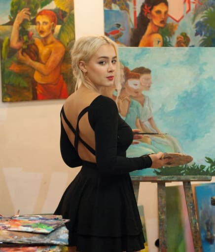
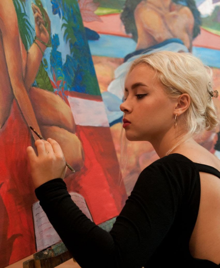

Biography
-
Education
The school's director, Svitlana Grosh, joined the reconstruction of her native school. Thanks toher, the Lykhachiv lyceum was included in the list of schools being restored as part of the U-LEAD with Europe Program. Grosh saw the advertisement for the "Rebuilding local schools for sustainability" initiative on Facebook. She admits that when she sent the application, she did not really hope that the
 -

Art gallery
The school's director, Svitlana Grosh, joined the reconstruction of her native school. Thanks toher, the Lykhachiv lyceum was included in the list of schools being restored as part of the U-LEAD with Europe Program. Grosh saw the advertisement for the "Rebuilding local schools for sustainability" initiative on Facebook. She admits that when she sent the application, she did not really hope that the
CV
-
Exhibitions:
2024 “Winter’s miracles” Museum of charity’s history, Kyiv, Ukraine
2023 “Arte Contemporanea Ukraina”, 17 art gallery, Rome, Italy
2023 “From the origins to the present”, National Museum of
Taras Shevchenko, Kyiv, Ukraine
2023 “Tryplian origins of Kyivan traditions”, city library, Kyiv, Ukraine
2023 “Weapon Transformation”, D12, Kyiv, Ukraine
2023 “Harmony of the univers”, Singing field, Kyiv, Ukraine
2021 “Creativity and happiness of genesis”, Art hub Mozhlivist,
Kyiv, Ukraine -
Personal exhibition:
2022 “Ordinary landscapes”, bomb shelter, Kyiv, Ukraine
-
Mural:
2023 “Kupala’s night”, on school in Lykhachiv, Ukraine, (within
the U-lead program and support of European Commission)